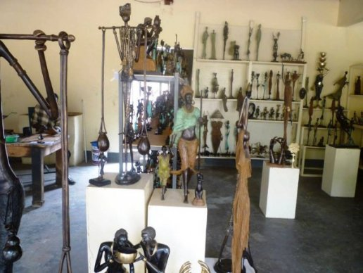
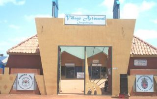
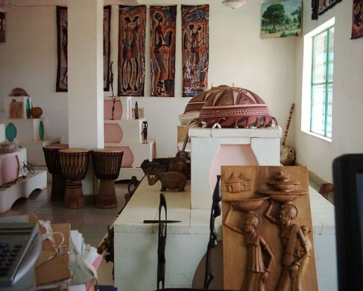
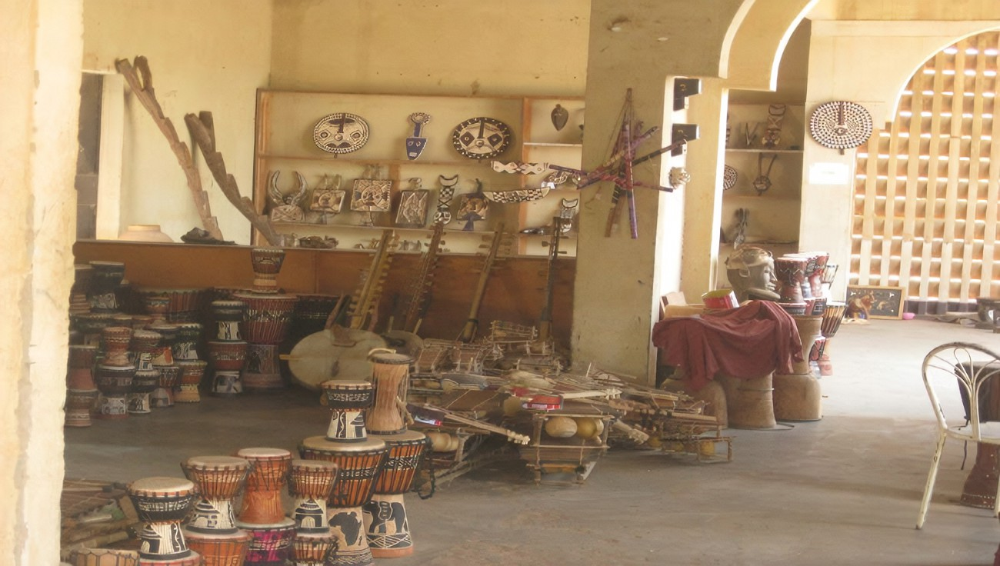

🇧🇫 🫶🫶😀😀😀😄😁VILLAGE ARTISANAL A OUAGADOUGOU😁😄😀😀😀🫶🫶
DESCRIPTION
Derrière les murs ocre et chaleureux du Village Artisanal de Ouagadougou, bat un cœur fait de feu, de bois, de terre et d’humanité. Ici, chaque atelier est un sanctuaire, chaque main un poème vivant, chaque souffle un chant silencieux transmis depuis des générations.
Lorsque l’on franchit les portails de ce lieu vibrant, le monde moderne s’efface peu à peu. Ce n’est pas un simple marché, ni une exposition figée : c’est une rencontre avec l’âme du Burkina Faso. Un lieu où le bruit des marteaux épouse le rythme des coeurs, où le bois sent bon la vie, le cuir la tradition, et les tissus la couleur d’un peuple debout. On y entre curieux, on en sort transformé. Chaque regard croisé, chaque sourire échangé, chaque objet touché ou contemplé raconte une histoire pas seulement celle de son créateur, mais celle d’un pays fier, digne, et infiniment créatif. Les bronziers façonnent l’éternité avec des flammes. Les tisserands trament la mémoire du continent sur leurs métiers. Les sculpteurs parlent à la matière comme on parle à un enfant. Et les femmes, gardiennes des savoirs, peignent la beauté du monde sur des toiles, des pagnes ou des poteries.
Le Village Artisanal, c’est une respiration dans le tumulte, un chant dans le silence, une lumière dans la poussière rouge. C’est un lieu où l’on sent battre le cœur de l’Afrique avec force et tendresse. Y être, c’est ne plus vouloir partir. C’est avoir envie de tendre la main, de créer, de transmettre. C’est se souvenir que la beauté, la vraie, naît du geste humble et du temps donné avec amour.
HISTORIQUE
illage Artisanal de Ouagadougou** - *Historique* : Créé en 1985 pour promouvoir l’artisanat local, il regroupe des ateliers de bronze, cuir, tissage et poterie. - *Particularité* : Lieu idéal pour acheter des masques, des bogolans (tissus teints) et des statues en bois.
Le *Village Artisanal de Ouagadougou* a été conçu pour préserver et promouvoir l’artisanat local, tout en offrant aux artisans un espace structuré pour créer et vendre leurs œuvres. Situé non loin du centre-ville, ce lieu emblématique incarne la richesse des savoir-faire traditionnels, alliant *bronze, bois, tissage, cuir et poterie*. Inspiré par une volonté de valoriser le patrimoine culturel, il est rapidement devenu un passage obligé pour les amateurs d’art africain et les visiteurs en quête d’authenticité.
Aujourd’hui, le village s’impose comme un *véritable musée à ciel ouvert, où chaque échoppe raconte une histoire à travers ses créations. Les artisans, souvent héritiers de techniques séculaires, y perpétuent des métiers transmis de génération en génération. En plus d’être un pôle économique, le site joue un rôle social en formant les jeunes aux métiers d’art, assurant ainsi la pérennité de ce patrimoine vivant. Son ambiance vibrante et ses œuvres uniques en font bien plus qu’un marché : une **célébration de l’identité burkinabè*.
*Pourquoi le visiter ?* ✅ Découvrir des *pièces artisanales uniques* (masques, statues, bijoux). ✅ Rencontrer des *artisans passionnés* et comprendre leurs techniques. ✅ Soutenir l’*économie locale* et les traditions burkinabè. 👉 Un lieu où l’art prend vie… L’avez-vous exploré ? #ArtisanatBurkinabè #OuagaCulture

|  |  |  | 
| ||
|---|---|---|---|---|---|---|
|  |